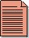

Artifacts >
Artifacts >
 Business Modeling Artifact Set >
Business Glossary
Business Modeling Artifact Set >
Business Glossary
Artifacts >
Business Modeling Artifact Set >
Business Glossary
Artifact:
| ||||||||||||||||
 Business Glossary |
The Business Glossary defines important terms used in the business modeling portion of the project. |
| Role: | Business-Process Analyst |
| Optionality: | This document is developed only if you need to keep the terms necessary to understand business modeling separate from those terms used during the consequent software engineering effort. Otherwise it can be excluded. |
| Templates: | |
| More Information: | |
| Input to Activities: | Output from Activities: |
There is one Business Glossary for the project. This document is important to many developers, especially when they need to understand and use the terms that are specific to the project.
The Business Glossary is primarily developed during the Inception phase, because it is important to agree on a common business terminology early in the project.
A Business-Process Analyst is responsible for the integrity of the Business Glossary, ensuring that it is:
In some situations, the context and scope of the business modeling effort has a large degree of similarity to
the context and scope of the software engineering effort. Where this is true, the terms identified and defined
during business modeling and requirements activities can be included in a single
Glossary
to improve consistency and reduce duplicate change management.
|
Rational Unified
Process
|